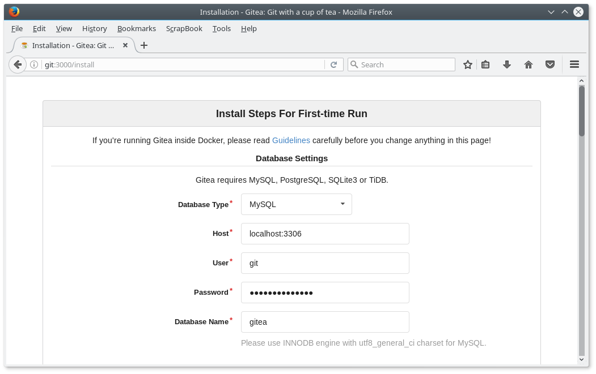
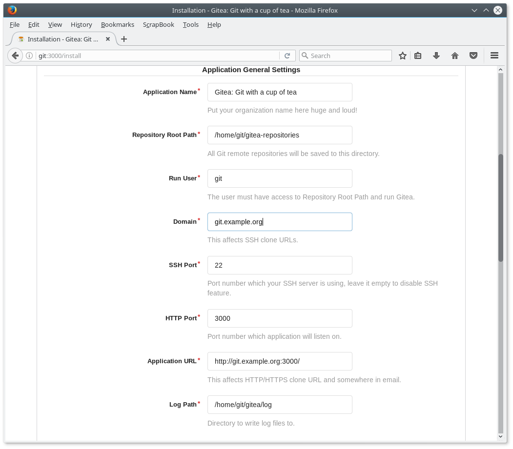
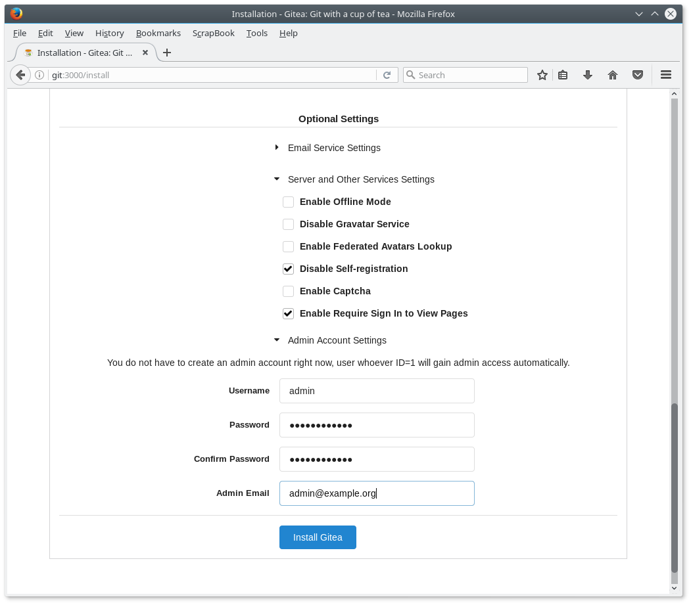
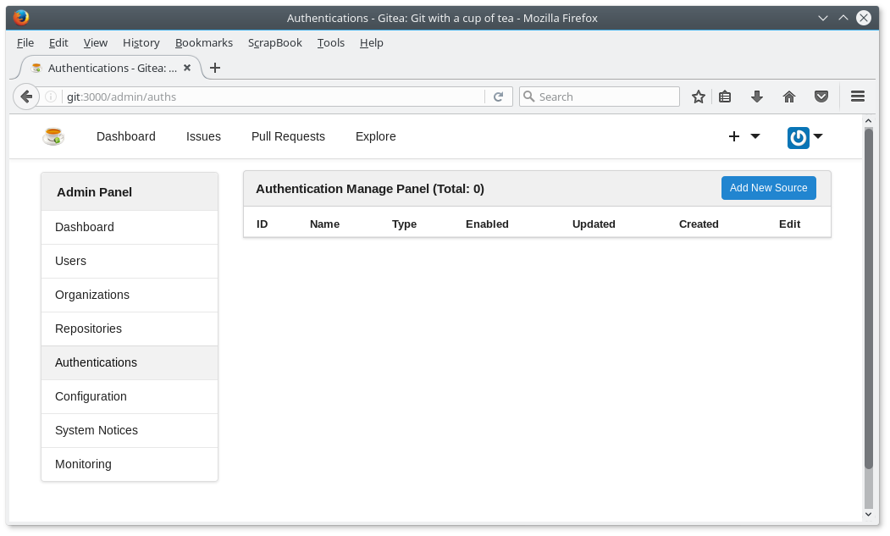
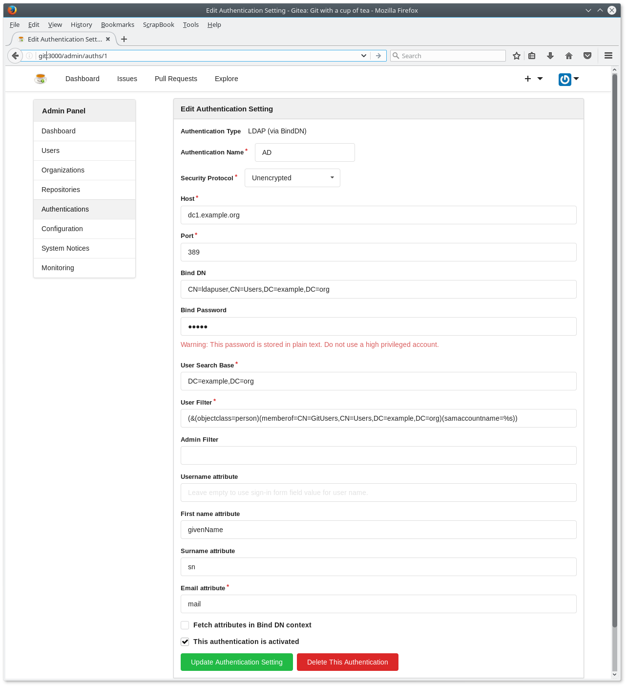

Eigenen Git-Server einrichten
Im Unterricht möchte ich die Schülerinnen und Schüler an einem gemeinsamen Projekt arbeiten lassen. Dazu benötigen sie eine Versionsverwaltung.1
Alternativen
In der Vergangenheit habe ich deshalb mit Gitlab herum experimentiert. Es war aber zu aufwendig, den Server stabil zu betreiben. Mehr oder weniger zufällig bin ich auf Gogs - Go Git Server gestoßen. Es gibt einen Fork des Projekts namens Gitea - Git with a cup of tea. Ich habe Gitea den Vorzug gegeben, da die Entwicklung von Gogs in der Vergangenheit eingeschlafen war. Gitea hat eine Menge Mitarbeiter, Gogs nur zwei. Allerdings sieht die Dokumentation von Gogs aufgeräumter aus. Momentan scheint der Unterschied zwischen Gogs und Gitea minimal zu sein.
Ubuntu Server 16.04 LTS bereitstellen
Den Gitea-Server kann man natürlich auf einem Ubuntu-Server installieren. Dazu habe ich die folgenden Schritte nach der Grundinstallation des Ubuntu-Servers mit dem OpenSSH-Server durchgeführt. Ob man den Server nativ oder virtualisiert betreibt bleibt dem eigenen Geschmack überlassen. Man kann Gogs und Gitea auch in einem Docker-Container betreiben. Die Installation ist dann ebenfalls super einfach.
Virtuelle Maschine mit Ubuntu Server 16.04 LTS aufsetzen
Meistens betreibe ich meine Server als KVM - Kernel based Virtual Machines. Die virtuelle Maschine ist dann schnell mit der folgenden Anweisung aufgesetzt.
virt-install --connect qemu:///system \
--name gitserver \
--ram 1024 \
--disk path=/var/lib/libvirt/images/gitserver.qcow2,size=100,format=qcow2 \
--vcpus 1 \
--network bridge=br0 \
--graphics none \
--console pty,target_type=serial \
--location 'http://archive.ubuntu.com/ubuntu/dists/xenial/main/installer-amd64/' \
--extra-args 'console=ttyS0,115200n8 serial'
Natürlich kann man auch Xen, VirtualBox, VMware oder sonst eine Virtualisierungslösung verwenden.
Git installieren und Benutzer git anlegen
Auf unserem Git-Server benötigen wir natürlich git. Das muss noch installiert werden. Damit könnte man schon seine Versionsverwaltung auf dem Server betreiben. Das bietet aber keinerlei Komfort.
sudo apt install git
Der Gitea-Server soll unter dem (normalen) Benutzer git laufen. Den muss man mit dem folgenden Kommando noch anlegen.
sudo adduser git
MariaDB installieren und Datenbank anlegen
Gogs und Gitea benötigen eine Datenbank. Sie können dabei MySQL (MariaDB), PostgreSQL, SQLite3, MSSQL und TiDB verwenden. Eine Empfehlung habe ich nicht gefunden. Da ich mit MySQL gut vertraut bin, habe ich mich für MySQL (MariaDB) entschieden und mit der folgenden Anweisung auf dem Server installiert.
sudo apt install mariadb-server
Mit den beiden folgenden SQL-Anweisungen wird die Datenbank für Gitea eingerichtet und dem Benutzer git die vollen Rechte auf der Datenbank gegeben.
CREATE DATABASE IF NOT EXISTS gitea CHARACTER SET utf8 COLLATE utf8_general_ci;
GRANT ALL ON gitea.* to 'git'@'localhost' identified by '<Passwort>';
Schreibt man die SQL-Anweisungen von oben in die create_gitea.sql, so kann man die Datenbank für Gitea mit dem folgenden Kommando einrichten.
sudo mysql -uroot < create_gitea.sql
Gitea installieren und konfigurieren
Nach den Vorbereitungen kann man jetzt Gitea installieren und konfigurieren. Mir erschien die Installation als Binärdatei am einfachsten. Dazu braucht man als Benutzer git nur die ausführbare Datei in ein passendes Verzeichnis herunterzuladen und zu starten:
su git
cd ~
mkdir gitea
cd gitea
wget -O gitea https://dl.gitea.io/gitea/1.0.0/gitea-1.0.0-linux-amd64
chmod +x gitea
./gitea web
Jetzt läuft der Gitea-Server und kann konfiguriert werden.
Konfiguration
Die Konfiguration erfolgt im Web-Browser unter der auf der Konsole angezeigten Adresse (bei mir http://git:3000/).

Abbildung 1: Konfiguration oberer Bereich

Abbildung 2: Konfiguration mittlerer Bereich
Den Mail-Server habe ich erst einmal nicht konfiguriert (siehe Abbildung 3).

Abbildung 3: Konfiguration unterer Bereich
Jetzt ist der Gitea-Server fertig konfiguriert.
Benutzer aus Active Directory verwenden
Die Schülerinnen und Schüler haben ein Konto im Schulnetzwerk. Damit diese Konten für die Anmeldung am Gitea-Server verwendet werden muss man noch die Authentikation mit dem Active Directory konfigurieren.
Also fügen wir einen Authentikator hinzu:

Abbildung 4: LDAP (AD) als Authentikator hinzufügen

Abbildung 5: LDAP (AD) konfigurieren
Der Gitea-Server ist jetzt fertig konfiguriert. Wir beenden den laufenden Prozess mit CTRL-C und melden uns als Benutzer git ab.
Systemd
Damit der Gitea-Server beim Starten der Server-Maschine auch gestartet wird muss man das dem Systemd mitteilen. Dazu legt man die Datei /lib/systemd/system/gitea.service mit dem folgenden Inhalt an.
[Unit] Description=Gitea (Git with a cup of tea) After=syslog.target After=network.target After=mysqld.service #After=postgresql.service #After=memcached.service #After=redis.service [Service] # Modify these two values and uncomment them if you have # repos with lots of files and get an HTTP error 500 because # of that ### #LimitMEMLOCK=infinity #LimitNOFILE=65535 Type=simple User=git Group=git WorkingDirectory=/home/git/gitea ExecStart=/home/git/gitea/gitea web Restart=always Environment=USER=git HOME=/home/git [Install] WantedBy=multi-user.target
Jetzt noch schnell den Service aktivieren und über Systemd starten.
sudo systemctl enable gitea.service
sudo systemctl start gitea.service
Jetzt ist unser Gitea-Server fertig.
Fußnoten:
Einfach ein Projekt auf Github dafür einzurichten scheidet aus. Da ein eigenes Konto auf Github einrichten müsste. Unterricht soll aber in einer kontrollierten Umgebung stattfinden.